Ready for the Next Chapter
Turnkey Operation
Skaslien Gjestgiveri offers a rare opportunity to acquire a fully operational, award-winning hospitality business with 73 years of stable operation. The sale includes inventory, all staff, established routines, and operational systems. The property is ready for immediate takeover with all equipment maintained and service up to date.
Many Opportunities
- Comprehensive facilities and property ready for expansion
- Strategic location between Elverum and Kongsvinger
- Gateway to the Finnskogen tourism region
- Newly opened Norsk Skogfinsk Museum
- Grue and Kirkenær serve as the industrial centre for the Solør region, with strong local business and public sector that utilize the guesthouse year-round
Stable Foundation
- Strong financials with stable growth
- Established reputation and loyal customer base
- Award-winning cuisine as destination draw
- Diversified revenue streams (accommodation, restaurant, conferences, catering)
- Solid year-round operation, not dependent on seasonal tourism
- Environmental certification (Miljøfyrtårn)
- Strong local business connections
- 47 apprentices trained - established culinary program

Current owners Ottar and Elin Skaslien offer transition support
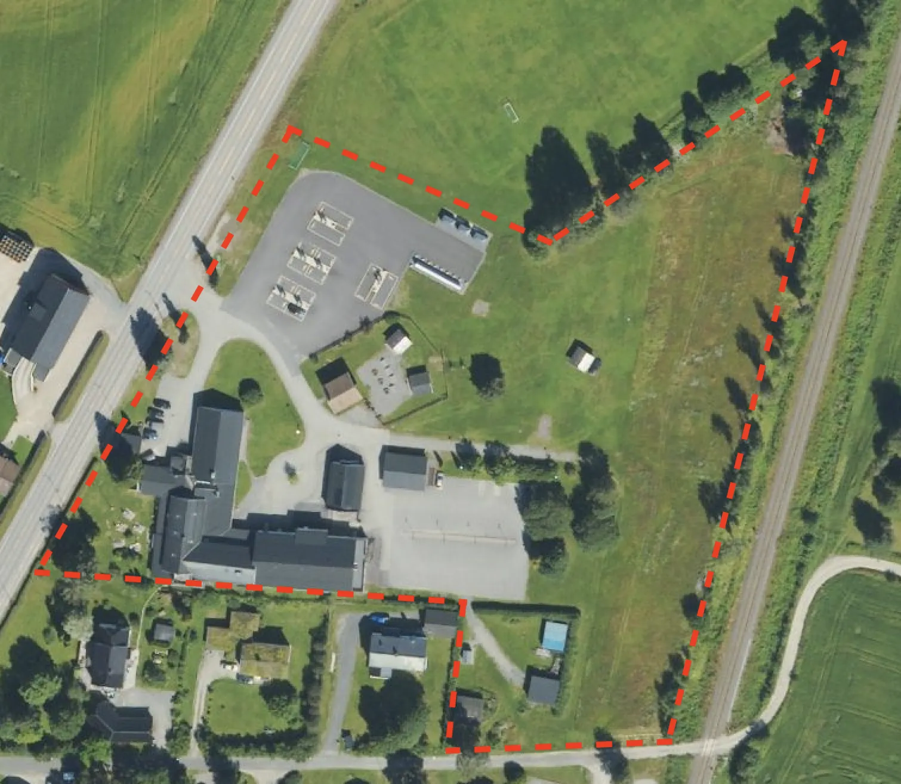
23,090 m² total property with expansion opportunities on over 10,000 m² of development land
Key Information
Property Information
- Building area: 2,543 m² gross / 2,287 m² usable (approx)
- Total land area: 23,090 m²
- Undeveloped land: Approximately 10,000 m² greenfield
- Property Valuation: 25 million NOK (Note: Based on a 2023 appraisal)
- Parking: 50 spaces
- Building history: Major renovation and expansion 2008, kitchen renovated 2012, guest room wing refurbished 2013
Business Operations
- Hotel: 40 guest rooms with 77 beds
- Restaurant: À la carte dining, 55 seats
- Commercial kitchen: Modern professional equipment for large events and daily à la carte service
- Catering: Private functions and events
- Conference facilities: 5 meeting rooms, up to 200 capacity
- Staff: 16 årsverk (full-time equivalents)
- Equipment: Modern AV equipment, video conferencing systems
Location & Reputation
- Gateway to Finnskogen: Norway's vast forest region with Finnish heritage
- Strategic location: Between Elverum and Kongsvinger, 90 minutes to Oslo Airport
- Award-winning cuisine: Multiple culinary awards since 2001
- Environmental certification: Miljøfyrtårn (Environmental Lighthouse)
- Guest ratings: 4.5/5 TripAdvisor, 8.7/10 Booking.com
- Heritage: 73 years of family tradition and hospitality
Financials & Budget
2024 Financial Performance
Skaslien AS (948753243)
- Revenue: 2,666,639 NOK
- Net Profit: 427,699 NOK
- Growth: 45.0% (2020-2024)
Skaslien Gjestgiveri AS (992496967)
- Revenue: 16,611,210 NOK
- Net Profit: 555,898 NOK
- Growth: 56.8% (2020-2024)
2025 Budget & Performance
- Combined Revenue: 19.5 million NOK (projected)
- Combined Net Profit: 1.7 million NOK (projected)
- Revenue Growth: Strong upward trajectory with subsidiary growing 56.8% over 4 years
Ownership Structure
Skaslien AS
For Sale - Parent Company
- Owns all real estate and facilities
- Receives rental income from subsidiary
Skaslien Gjestgiveri AS
Operating Subsidiary - Included in Sale
- Runs hotel, restaurant & all operations
- Employs all staff members
Awards & Recognition
Customer Reviews
Culinary Excellence
- "Best Dining Place Along the Road in Norway" (2001/2002)
- Regionvinner Ganefart (2008)
- Reiselivsprisen (2010)
- Finale Det Norske Måltid Stavanger (2013)
- 2nd place "Årets matglede bedrift" (2020)
Property & Facilities
Accommodation
40 guest rooms with 77 beds total across two floors
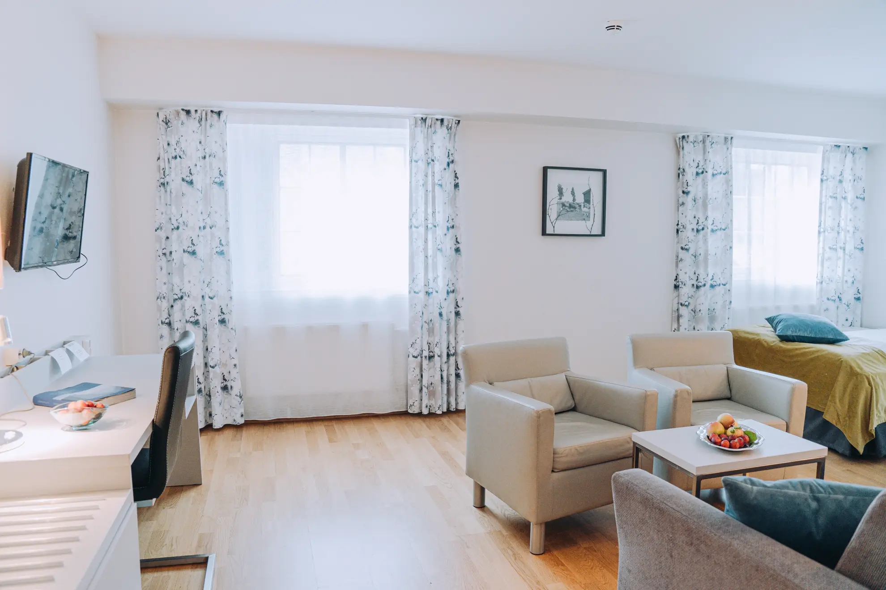
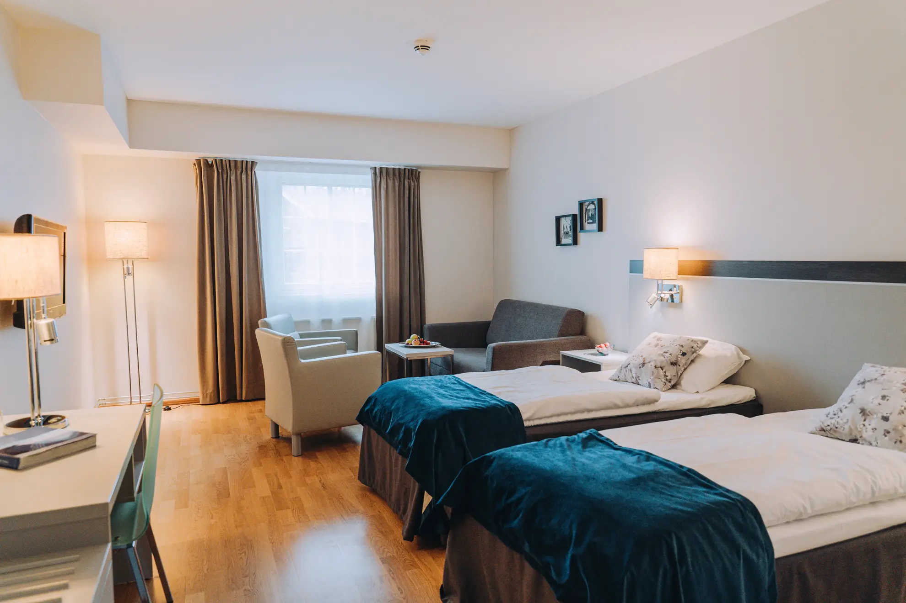

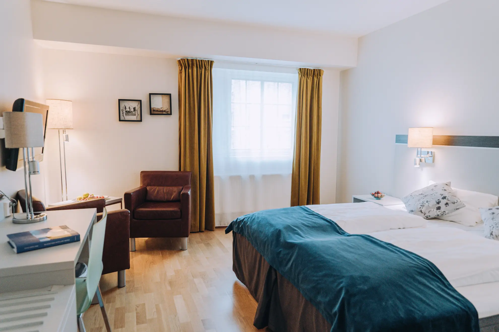
Restaurant & Kitchen
Award-winning restaurant with fully equipped commercial kitchen
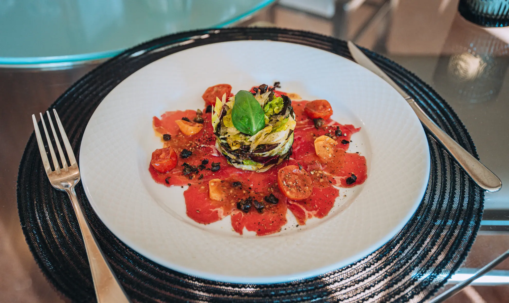
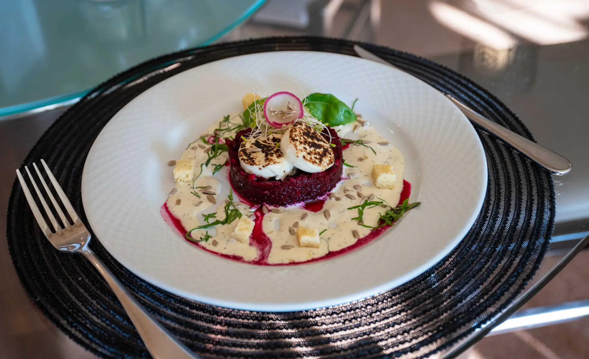

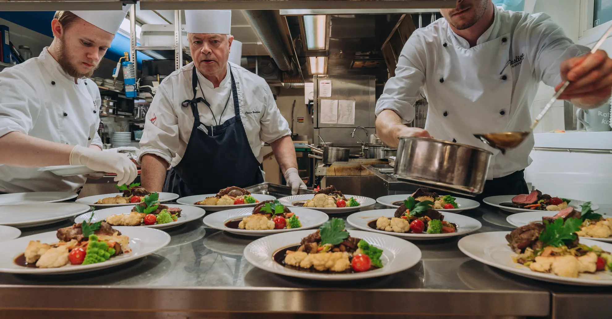
Conference & Events
Up to 200 person capacity with modern AV equipment


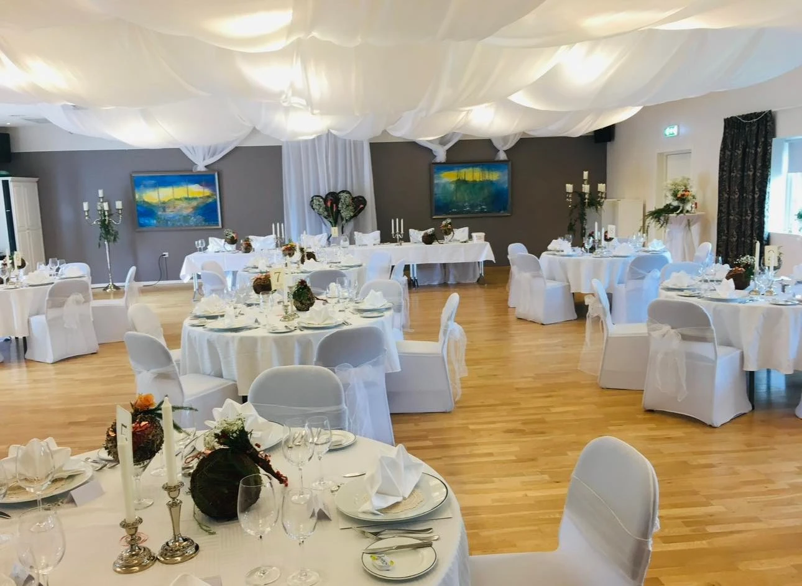
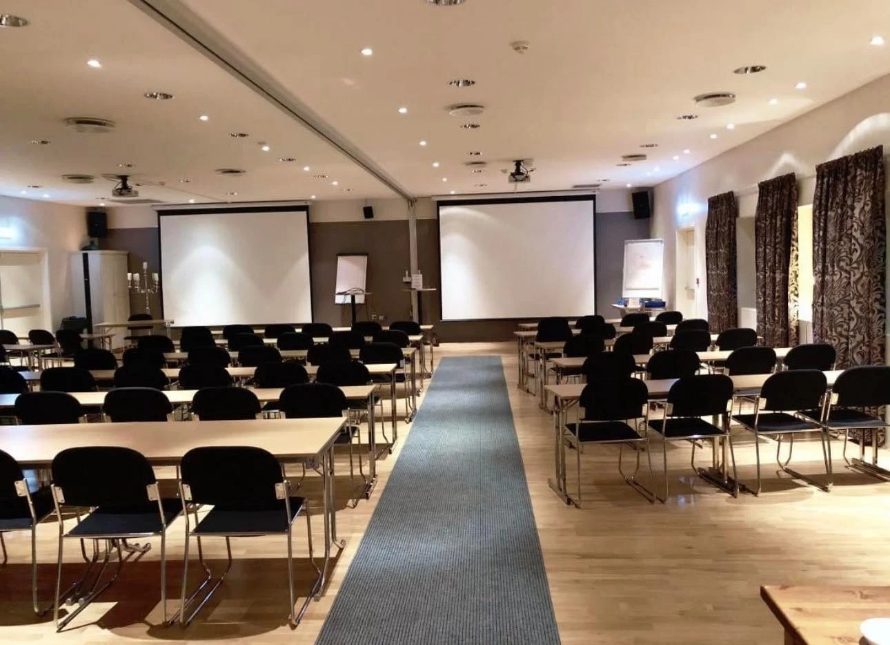
Property Grounds
23,090 m² total property with expansion opportunities on over 10,000m² greenfield

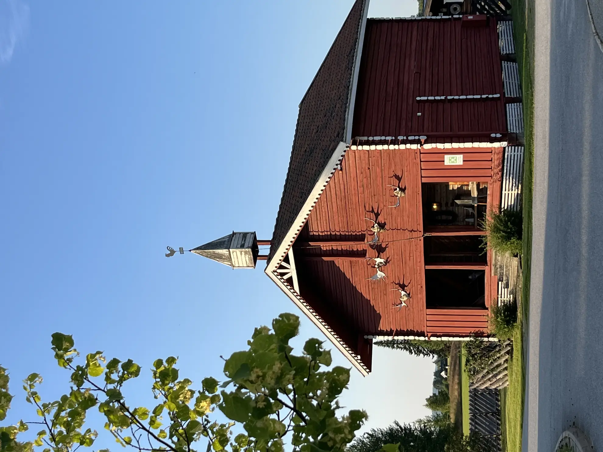
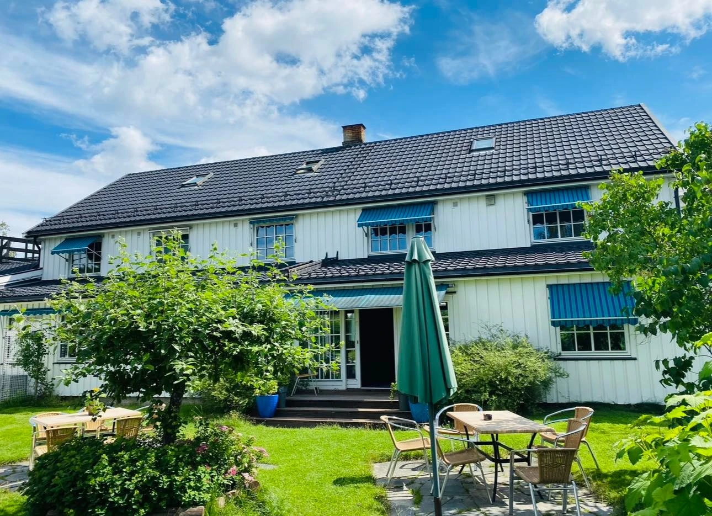

Location & Regional Attractions
Strategic Location
Kirkenær, Grue municipality, Innlandet
- 90 minutes to Gardermoen Airport
- 70 minutes to Torsby Airport (Sweden)
- Between Elverum and Kongsvinger
- Gateway to Finnskogen forest region
- Close to Swedish border
Nearby Attractions
- Norsk Skogfinsk Museum - Newly opened building
- Finnskogleden Trail - 240km cultural heritage hiking
- Trysil Ski Resort - alpine skiing 1,5 hours away
- Kongsvinger Fortress - Historic star-shaped fortress
- Klart Glass Workshop - World-class glass blowing (5km)
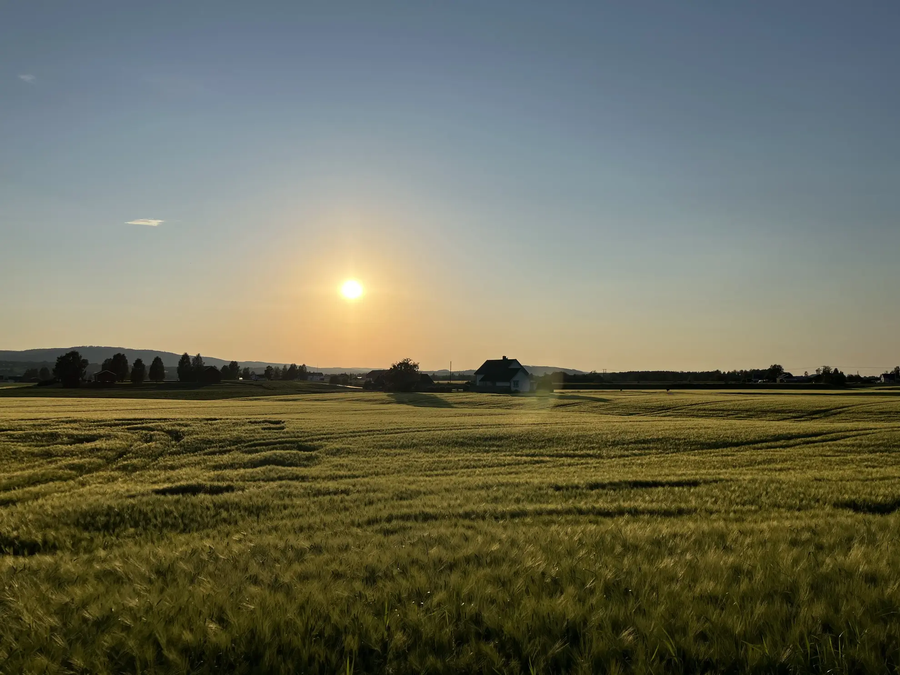
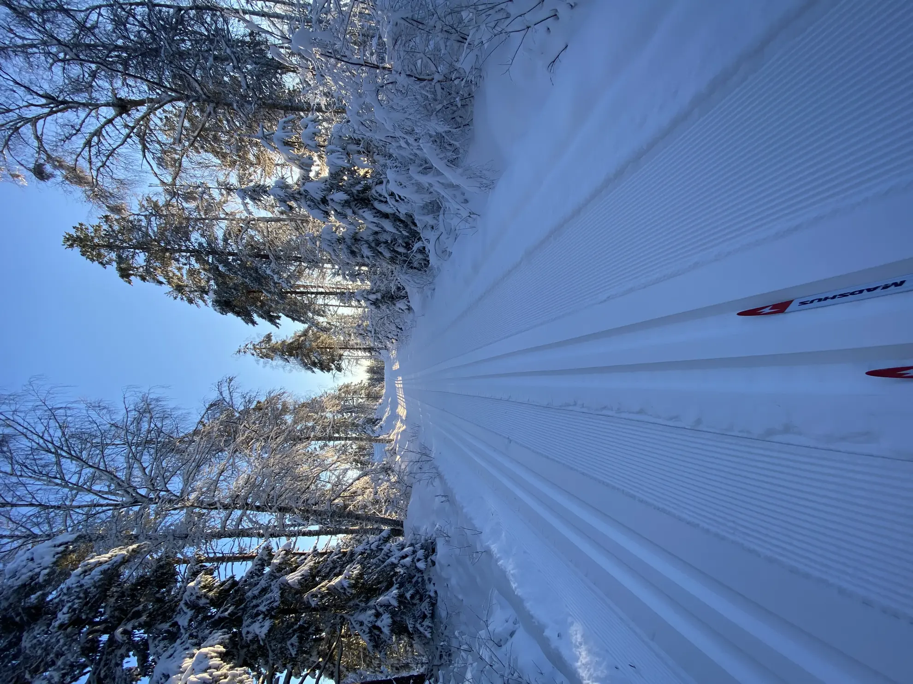
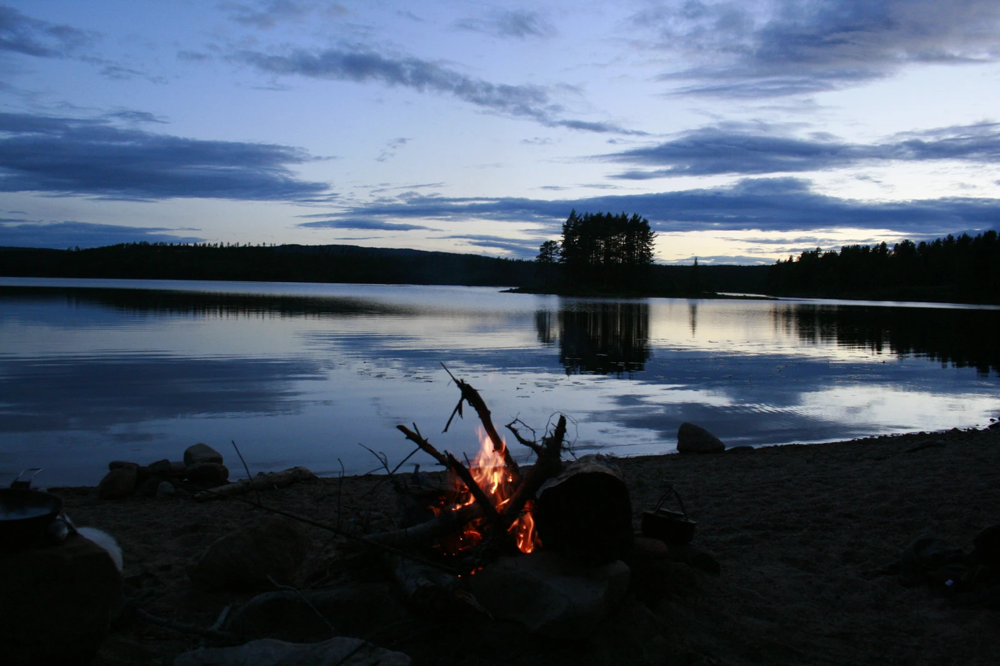

Contact Information
Ready for Your Questions
Skaslien Gjestgiveri represents a unique opportunity to acquire a turnkey hospitality business with 73 years of heritage. Contact us to discuss this investment opportunity.
Viewing: By appointment
Documentation: Full prospectus available to
serious inquiries
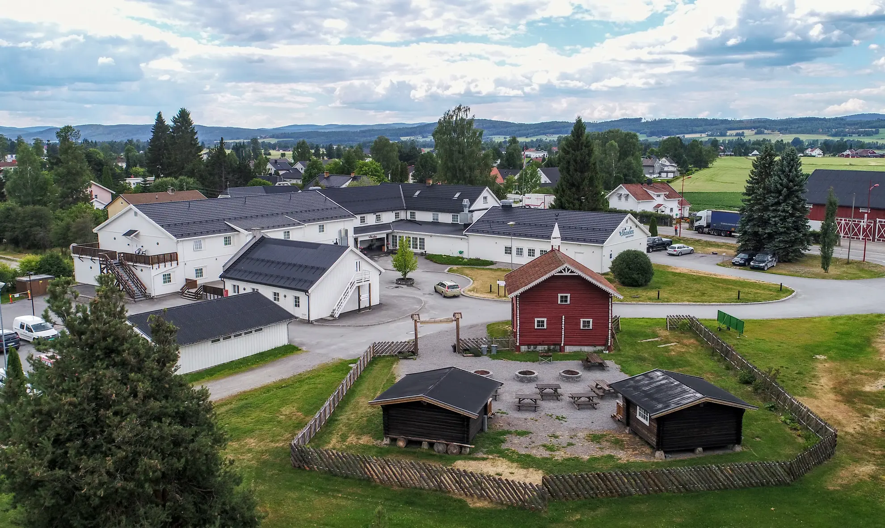